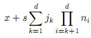

Torna alla pagina di Programmazione degli Elaboratori
:: Capitolo 2: Programmazione elementare ::
Indice
1 Informazione e rappresentazione
1.1 Misura dell'informazione
1.2 Rappresentazione dell'informazione
1.3 Rappresentazione di dati numerici
1.4 Rappresentazione di dati simbolici
1.5 Rappresentazione di dati alfanumerici
2 Un linguaggio assembly
2.1 La macchina MIX
2.2 L'insieme delle istruzioni della macchina MIX
2.3 Struttura di un programma MIXAL
2.4 Programma "Hello world" in MIXAL
3 Organizzazione dei dati
3.1 La mappa della memoria
3.2 Il concetto di variabile
3.3 Tabelle
3.4 Strutture dati dinamiche
4 Sottoprogrammi
4.1 Chiamata di sottoprogramma
4.2 Lo stack
4.3 Chiamata di sottoprogrammi basata sullo stack su MIX
5 Ricorsione
5.1 Ricorsione e induzione
5.2 "Divide et impera"
5.3 Ricorsione strutturale
1. Informazione e rappresentazione
Partendo dall'assunto che gli elaboratori elettronici sono macchine per trattare l'informazione, non ci soffermeremo sulla definizione stessa di informazione, ma passeremo oltre studiandone solo ciò che può tornarci utile nell'ambito della programmazione.
1.1 Misura dell'informazione
L'unità di misura dell'informazione è il bit, definito come la quantità di informazione necessaria per decidere tra due alternative equiprobabili. Un bit è dunque sufficiente per rappresentare gli esiti del lancio di una moneta (testa o croce), o se un dispositivo è funzionante o guasto, o ancora se GDA è vivo o morto.
Se invece le alternative equiprobabili non fossero solo 2, ma un generico numero n, allora la quantità di informazione necessaria a rappresentarle sarebbe pari a log2n bit. Ad esempio, i bit necessari per rappresentare i possibili esiti del lancio di un dado sono pari a log26 bit. E' importante osservare come n sia pari ad 1/p, dove p non è altro che la probabilità che avvenga un particolare evento.
La grandezza che mi dà una stima dell'incertezza di un certo numero di alternative è l' entropia, ovvero la misura dell'informazione media di un insieme di alternative tra loro mutualmente esclusive (se è vera una le altre sono false) e che coprono tutte le possibilità.
1.2 Rappresentazione dell'informazione
In un elaboratore elettronico tutte le informazioni vengono rappresentate come configurazioni di cifre binarie. La numerazione binaria sembra fatta apposta, dal momento che ha solo due simboli (0 ed 1) equiprobabili e completamente compatibili con la logica a due stati (acceso e spento) dei componenti elettrici del calcolatore. Ad esempio, quattro cifre binarie contengono 4 bit di informazione.
Dato che ogni cifra binaria trasporta esattamente un bit come quantità di informazione, spesso i due concetti vengono ingenuamente confusi, ma senza gravi conseguenze.
Cosa si intende esattamente per informazione in un calcolatore? Bisogna distinguere due entità:
- i programmi, ovvero sequenze di istruzioni;
- i dati su cui i programmi operano, ovvero numeri, simboli, testi, immagini, video, ...
1.3 Rappresentazione di dati numerici
Esistono diversi tipi di rappresentazione di dati numerici, a seconda della loro natura.
Rappresentazione binaria diretta
E' la più semplice possibile, e consiste nella mera rappresentazione del valore numerico nel sistema binario. Ad esempio 5 (sistema decimale) vale 101, C1A0 (sistema esadecimale) vale 1100000110100000.
Rappresentazione in formato fisso
Rappresenta gli interi utilizzando un numero fisso di cifre binarie. Esiste quindi un limite alla quantità di numeri che è possibile rappresentare (e in effetti un elaboratore elettronico non ha risorse infinite), che se superato dà origine al fenomeno dell’ overflow. Per overflow (traboccamento) si intende la condizione in cui il risultato di un'operazione sia un numero troppo grande per essere rappresentato.
Rappresentazione in complemento a uno
Permette la rappresentazione di numeri interi con segno. Si ottiene rappresentando i numeri positivi in modo diretto, mentre quelli negativi con il loro complemento, ovvero sostituendo tutti gli 0 con gli 1 e viceversa. In questo modo la cifra più significativa degli interi positivi sarà 0, mentre sarà 1 per quelli negativi. Ad esempio -5 (sistema decimale) vale 1010, ma anche 11010 o 11111010 (non importa il numero degli 1 a sinistra, è come dire che ho 23 anni o 023 anni o 0023 anni, ecc).
Rappresentazione in complemento a due
Permette anch'essa la rappresentazione di numeri interi con segno, ma superando alcuni limiti del complemento a uno, quali il fatto che lo 0 fosse rappresentato in due modi diversi (0000 e 1000, ad esempio) e l'impossibilità di effettuare direttamente alcune operazioni tra interi con segno diverso. Come si ottiene la rappresentazione in complemento a 2? Complementando a uno il numero intero e sommando quindi 1. Anche in questo caso il segno è reso evidente dalla cifra più significativa. Ad esempio -5 (sistema decimale) vale 1011 (o 11011, 11111011, ...).
Rappresentazione a virgola fissa
Il modo più semplice per rappresentare un numero reale è la rappresentazione a virgola fissa, che prende un numero intero e pone una virgola in un punto convenzionale (stabilito più o meno liberamente) tra le cifre della sua rappresentazione binaria. Ha due limiti principali: l'esistenza di un rigido intervallo di rappresentazione e una perdita di precisione nella divisione tra numeri grandi.
Rappresentazione a virgola mobile
La rappresentazione a virgola mobile prevede l'utilizzo di tre elementi: il segno, la mantissa (ovvero le cifre significative del numero) e l’ esponente (cioè la potenza della base per cui deve essere moltiplicata la mantissa). Ad esempio -1984,309 in virgola mobile diventa -1,984309 x 103, dove 1.984309 è la mantissa, 3 è l'esponente ed il segno è negativo.
Il formato standard per questa rappresentazione è l’IEEE 754, che può essere a precisione singola - 32 bit - o doppia - 64 bit - così ripartiti:
| Precisione
| Segno
| Esponente
| Mantissa
|
| Singola
| 1
| 8
| 23
|
| Doppia
| 1
| 11
| 52
|
Visto che in un sistema binario la mantissa non può che avere un 1 prima della virgola, lo si omette e si passa direttamente a rappresentare le seguenti cifre frazionarie. (Affermazione da controllare: e se volessi scrivere 9999999 come farei? ci sarebbe un 9 prima della virgola giusto? (sarebbe+9,999999 x 106 sbaglio?))
Lo standard IEEE 754 riserva alcune configurazioni per i cosiddetti valori speciali:
- 0, con esponente e mantissa composti di soli zeri (esiste un +0 e un -0, considerati uguali). Lo 0 è dunque un valore speciale con una rappresentazione ad hoc;
- ∞, rappresentato da un campo esponente di soli 1 e di una mantissa di soli 0. Il campo segno distingue tra +∞ e -∞;
- NaN, con un esponente composto di soli 1 e una mantissa non tutta di 0, così da poter ottenere diverse configurazioni di NaN, ognuna con un significato ben preciso.
Da evidenziare il fatto che a rigore non è possibile rappresentare i numeri reali, poiché i numeri irrazionali non ammettono una rappresentazione finita.
1.4 Rappresentazione di dati simbolici
Un simbolo è un’entità il cui unico scopo è quello di rimandare a qualche altra cosa, reale o fittizia che sia. Va dunque da sé che il simbolo sia una rappresentazione, dato che per sua stessa natura rappresenta qualcos'altro.
I simboli vengono massicciamente impiegati per rendere le informazioni comprensibili e manipolabili dall'elaboratore elettronico. Operativamente, questa operazione di "conversione" avviene in due passaggi:
- la definizione di un repertorio appropriato di unità simboliche;
- la definizione di una codifica appropriata per ciascuna unità simbolica.
Ognuna di queste unità simboliche può essere di due tipi:
- atomica (o semplice), che non deriva da una combinazione di altre unità simboliche. Viene codificata mettendola in relazione biunivoca con l’insieme dei numeri naturali (ad ogni unità viene associato un numero progressivo, per permettere al calcolatore di distinguerla dalle altre in modo univoco);
- complessa, generata da una combinazione di unità atomiche. Viene rappresentata con opportune combinazioni delle rappresentazioni delle unità simboliche di cui è costituita.
La rappresentazione da scegliere deve essere ovviamente quella più conveniente, anche se spesso non è possibile effettuare tale scelta né in modo arbitrario, né a priori.
1.5 Rappresentazione di dati alfanumerici
I dati alfanumerici sono fondamentalmente testi, quindi sequenze di caratteri, quindi insiemi di simboli. Ne consegue che i testi verranno codificati come sequenza di caratteri, mentre i singoli caratteri verranno rappresentati per mezzo di una codifica che assegna a ciascuno un numero progressivo.
Un primo tipo di codifica è stato il codice ASCII, che rappresenta in 7 bit tutti i caratteri della tastiera americana più alcuni caratteri speciali e di controllo. Ma davanti al vasto repertorio di lettere accentate e caratteri speciali delle varie lingue, l'ASCII non fu più sufficiente. Nacque così la necessità di adottare un nuovo standard di codifica testuale, più ampio e internazionale. Oggi quello più utilizzato è lo Unicode, ormai supportato dalla maggior parte dei sistemi operativi e delle applicazioni recenti. Inizialmente solo a 16 bit, lo standard Unicode supporta oggi tre forme di codifica: UTF-8, UTF-16 e UTF-32.
Torna su
2. Un linguaggio assembly
L' assembly è il linguaggio di programmazione più vicino al linguaggio macchina vero e proprio. In questo capitolo verrà preso in considerazione il MIXAL, l'assembler della macchina immaginaria MIX, inventata da Donald E. Knuth.
MIX e MIXAL sono semplificazioni dell'architettura dei microprocessori CISC e relativi assembler, ma pur essendo dei modelli ne forniscono una buona e potente approssimazione.
2.1 La macchina MIX
Nella macchina MIX il byte è composto da 6 bit, ovvero 64 valori possibili per byte. Essi rappresentano l'unità base di immagazzinamento delle informazioni.
Una parola di memoria è definita come un insieme di 5 byte più un bit di segno. I byte sono numerati da 1 a 5, mentre il bit di segno ha indice 0:
| 0
| 1
| 2
| 3
| 4
| 5
|
| + / -
| 1 byte
| 1 byte
| 1 byte
| 1 byte
| 1 byte
|
In questo modo è possibile individuare sottoparole scrivendo una specifica di campo della forma (L:R), dove L è l'indice del primo byte ed R dell'ultimo (estremi inclusi). Ad esempio: (0:0) individua il solo segno; (3:5) individua gli ultimi tre byte. Da notare come la specifica di campo venga rappresentata internamente come risultato dell'operazione "8L + R". Ad esempio: (3:4) = 3*8 + 4 = 28 (la dimensione rimane sempre di un byte).
La macchina MIX dispone di nove registri:
- rA, registro A, o accumulatore. Contiene una parola, generalmente l'operando di un'operazione aritmetica o di scrittura della memoria;
- rX, registro X, o extension. Contiene una parola ed è generalmente usato come estensione a destra di rA. Da notare come il registro rAX preso nel suo insieme contenga 10 byte più un solo bit di segno;
- rJ, registro di salto. Contiene due byte (il segno è sempre positivo) che rappresentano l'indirizzo della cella a cui il programma deve saltare;
- rIn (dove n = 1, 2, ... , 6), sei registri indice. Contengono due byte più segno, usati per mantenere degli indici per il calcolo degli indirizzi effettivi delle celle di memoria.
Vi sono inoltre:
- l' indicatore di overflow OV, che indica il superamento della capacità di un registro. Può avere valore "on" o "off";
- l' indicatore di confronto CM, che può valere > (o G), = (o E) e < (o L);
- ventuno dispositivi di input / output denotati con le sigle u0, u1, ..., u20, grazie ai quali la macchina MIX comunica con l'esterno. Per convenzione il dispositivo u19 è la console del calcolatore.
La macchina MIX ha infine 4000 celle di memoria, ognuna delle quali ha le dimensioni di una parola ed è caratterizzata da un indirizzo.
2.2 L'insieme delle istruzioni della macchina MIX
Le istruzioni della macchina MIX sono parole così strutturate:
| 0
| 1
| 2
| 3
| 4
| 5
|
| + / -
| INDIRIZZO
| INDICE
| MOD
| COD.OP.
|
dove:
- INDIRIZZO dà appunto l'indirizzo della parola;
- INDICE è il modificatore dell'indirizzo. Se vale 0 non modifica nulla, mentre se è un numero compreso tra 1 e 6 indica uno dei sei registri indice, il cui contenuto andrà sommato a INDIRIZZO;
- MOD. è il modificatore dell'operatore, di solito una specifica di campo (L:R). Quando è omesso, generalmente significa che l'istruzione associata si applica alla parola intera;
- COD.OP. è il codice operativo che identifica l'istruzione vera e propria da eseguire. Ha come sintassi generale:
MNEMONICO INDIRIZZO,INDICE(MOD) , dove MNEMONICO è il nome dell'istruzione.
Alcune notazioni:
- con M s'intende l'indirizzo di memoria ottenuto sommando a INDIRIZZO il contenuto del registro indice specificato da INDICE. Essendo 4000 le celle di memoria della macchina MIX, potrà avere un valore compreso tra 0 e 3999;
- con V ci si riferisce al valore della sottoparola indicata da MOD. nella cella di memoria di indirizzo M;
- per riferirsi al valore contenuto in un registro o in una parola di memoria di cui si conosce solo l'indirizzo, basta mettere il suo nome tra parentesi quadre. Ad esempio il valore contenuto nel registro rA si richiama con [rA], mentre ad esempio [1234] indica il valore contenuto alla cella di memoria con indirizzo 1234;
- con X ← Y si intende che X (un registro, una parola di memoria, ecc.) assumerà il valore di Y (un registro, una parola di memoria, ecc.) come effetto dell'esecuzione dell'istruzione.
2.3 Struttura di un programma MIXAL
Abbiamo già detto che il MIXAL è l'assembler della macchina MIX, il cui compito è quello di assemblare il suo codice in una sequenza di istruzioni direttamente eseguibili dalla macchina.
Un programma MIXAL può contenere istruzioni o direttive, una per linea di codice. Le istruzioni sono quelle componenti del programma che vengono tradotte in istruzioni macchina, mentre le direttive sono quelle parti del codice che, pur non essendo direttamente tradotte in istruzioni, influenzano il modo in cui l'assemblatore effettua il suo compito. Sia le istruzioni che le direttive hanno il seguente formato:
Etichetta MNEMONICO Operando Commento
dove:
- l' etichetta è un simbolo alfanumerico che identifica la locazione corrente e che viene utilizzato per riferirsi ad essa. Può essere usata anche prima di essere stata definita;
- lo MNEMONICO è il nome dell'istruzione, anche chiamato operatore. Un elenco esaustivo di mnemonici e relative istruzioni potrete trovarlo sulla pagina TettyMixal;
- i commenti al codice, automaticamente ignorati dall'assemblatore e necessari come documentazione interna, Si scrivono a destra dell'operatore e dell'eventuale operando, oppure cominciando una linea di programma con un asterisco.
Le direttive MIXAL sono le seguenti:
- ORIG xxxx, specifica che l'assemblatore dovrà cominciare a inserire le istruzioni macchina in memoria a partire dalla cella di indirizzo xxxx. Ad esempio ORIG 1000 fissa l'indirizzo di partenza del caricamento del programma nella cella 1000;
- EQU, definisce un simbolo e gli assegna un valore numerico (assegna un valore numerico a un'etichetta). Ad esempio: GIORNO EQU 23 significa che GIORNO varrà 23 nell'assemblatore;
- CON, copia nella locazione di memoria corrente il risultato di un'espressione data (permettendo così di specificarne il contenuto);
- ALF abcde, mette il codice dei cinque caratteri “abcde” nella locazione corrente di memoria. Ad esempio: ALF GATTO;
- END locazione, segnala la fine delle righe del programma. “locazione” è l'indirizzo da cui dovrebbe iniziare l'esecuzione una volta caricato il codice in memoria. Esempio: END INIZIO.
2.4 Programma "Hello world" in MIXAL
Di seguito, il listato di un programma in MIXAL che visualizza come output il messaggio "Hello.world!!":
| Etichetta
| Mnemonico
| Operando
| Commento
|
| TERM
| EQU
| 19
| Definisce il simbolo TERM e gli dà valore 19
|
|
| ORIG
| 1000
| Definisce la cella di indirizzo 1000 come la prima da cui verranno caricate
|
| *
|
|
| le istruzioni
|
| INIZIO
| OUT
| MSG(TERM)
| Scrive i dati dalla cella MSG sul dispositivo definito da TERM (quindi, il 19)
|
|
| HLT
|
| Arresta l'esecuzione
|
| MSG
| ALF
| HELLO
| Prima cella di MSG, contiene i caratteri "HELLO"
|
|
| ALF
| .WORL
| Seconda cella di MSG, contiene i caratteri ".WORL"
|
|
| ALF
| D!!
| Ultima cella di MSG, contiene i caratteri "D!! "
|
|
| END
| INIZIO
| Segnala la fine del programma e indica la locazione INIZIO come quella di
|
| *
|
|
| inizio esecuzione
|
Torna su
3. Organizzazione dei dati
3.1 La mappa della memoria
La mappa della memoria è una lista di tutte le locazioni di memoria (celle di memoria + registri) disponibili. È un passo obbligato per il programmatore di linguaggi di basso livello, in quanto l'organizzazione dei dati deve essere pianificata prima della vera e propria fase di codifica del programma.
Tracciare la mappa della memoria significa inoltre indicare quali zone riservare ai dati di ingresso e di uscita (già noti grazie alle specifiche), più quelli intermedi necessari per il corretto funzionamento del programma.
Obiettivo della mappatura è associare ad ogni dato un indirizzo, ovvero il numero della cella di memoria da cui inizia la zona ad esso riservata dal programmatore.
3.2 Il concetto di variabile
La variabile è un nome simbolico associato ad una precisa zona di memoria allocata per contenere un dato di un certo tipo (un intero, un reale, una stringa, ...). È un elemento molto importante della programmazione, in quanto consente di assegnare agli indirizzi dei vari dati allocati in memoria delle etichette facili da ricordare e comprendere.
Se ad esempio si volesse creare un programma che prevede l'utilizzo di una data, sarebbe comodo creare tre variabili per memorizzare il giorno, il mese e l'anno. In MIXAL, per crearle rispettivamente agli indirizzi 1000, 1001 e 1002, dovremo scrivere:
GIORNO EQU 1000
MESE EQU 1001
ANNO EQU 1002
Per inserire o sostituire i valori delle variabili si useranno le istruzioni ENTA e STA. La prima copia nel registro rA il particolare valore specificato dall'operando, la seconda copia nella variabile il contenuto del registro rA. Se ad esempio volessi assegnare il valore 30 alla variabile GIORNO dovrei scrivere:
ENTA 30
STA GIORNO
3.3 Tabelle
Le tabelle sono delle strutture costituite da dati dello stesso tipo, e allocate in una determinata zona di memoria in modo tale che le singole componenti siano disposte in sequenze ad intervalli regolari. Con il termine generale "tabelle" si intendono vettori, matrici, liste, elenchi, insiemi, ...
Guardiamo ora nello specifico come viene allocata una tabella monodimensionale.
Supponendo che x sia l'indirizzo della tabella e che il suo dato di base occupi s celle di memoria, l'indirizzo del primo elemento sarà x, quello del secondo x + s, quello dell' iesimo elemento sarà x + is. Ad esempio, se l'indirizzo della tabella è 1000 ed ogni suo dato occupa 3 celle di memoria, il quarto elemento della tabella avrà indirizzo 1000 + 4*3 = 1012.
Come vengono gestite le tabelle con più dimensioni?
Semplice, ogni tabella ad n dimensioni viene vista come una tabella unidimensionale di tabelle a d - 1 dimensioni. La dimensione di una tabella di dimensioni n1 x n2 x ... x nd è pari a: s x n1 x n2 x ... x nd, dove s è lo spazio occupato dal dato di base.
Ora, per quanto riguarda il processo di allocazione, supponendo che:
- x sia l'indirizzo di una tabella a d dimensioni,
- il suo dato di base occupi s celle di memoria e
- la tabella sia di dimensioni n1 x n2 x ... x nd,
allora l'indirizzo dell'elemento xj1,j2,...,jd sarà:

Quindi, nel caso di una tabella bidimensionale n x m (ad esempio 3 x 5), l'indirizzo dell'elemento xij (ad esempio x23) sarà dato da x + s(im + j) (quindi, se x = 1000 e s = 3: 1000 + 3*(2*5 + 3) = 1039).
3.4 Strutture dati dinamiche
Capita spesso di non poter conoscere a priori la quantità di dati che conterranno le tabelle, con la conseguenza di essere costretti a crearne di sovradimensionate per evitare che venga richiesta più memoria di quella riservata durante l'allocazione. Ciò comporta nella maggior parte dei casi solo uno spreco di risorse, già molto limitate nella macchina MIX. Un'ottima alternativa è sfruttare strutture dati dinamiche, allocate dinamicamente durante l'esecuzione in un'area di memoria chiamata heap.
Un esempio di struttura dati dinamica è la lista collegata (linked list), composte da unità fondamentali detti nodi. Ogni nodo contiene il valore del dato più un collegamento al nodo successivo, ovvero un puntatore all'indirizzo di memoria in cui si trova l'elemento seguente. Una lista collegata termina quando il puntatore dell'ultimo elemento punta ad un particolare indirizzo di memoria rappresentante il puntatore nullo (generalmente l'indirizzo 0).
La gestione dello heap da parte della lista collegata è semplice e intuitiva, basata sul costante aggiornamento di una lista delle aree libere di memoria. Ognuna di queste aree è caratterizzata dall'indirizzo della prima cella, dal numero di celle che essa contiene (quindi dalla sua dimensione) e dal puntatore all'area libera successiva.
All'inizio dell'esecuzione, l'heap sarà un'unica vasta area libera, con dimensione coincidente allo heap stesso e puntatore nullo. Se poi bisogna allocare un'area di memoria di n celle, si percorre dall'inizio la lista delle aree libere finché non se ne trova una di dimensione maggiore o uguale ad n. Allocati i nuovi spazi, si provvede subito a toglierli dalla lista e ad inserire al loro posto l'eventuale avanzo. Quando poi un'area allocata non serve più, la si può deallocare reinserendola nella lista delle aree libere, in modo che possa essere riutilizzata.
I linguaggi di programmazione di alto livello forniscono la gestione automatica dello heap.
Torna su
4. Sottoprogrammi
Se un programma deve svolgere lo stesso compito più di una volta e in diversi punti del listato, non è molto pratico riscrivere ogni volta le istruzioni per realizzarlo. Il sottoprogramma è un codice che viene scritto una volta sola e poi "richiamato" in tutti quei punti del programma in cui si richiede la sua esecuzione.
L'utilizzo dei sottoprogrammi comporta una serie di vantaggi, quali:
- facilitare la comprensione della struttura di un programma lungo e articolato;
- fornire una segmentazione logica del problema complessivo (strizzando l'occhio all'approccio top-down);
- facilitare la correzione o la modifica del programma (si modifica il codice una volta sola per tutte le sue istanze);
- permettere il riuso del software, ovvero la possibilità di riciclare alcuni sottoprogrammi in altri programmi che risolvono un problema diverso.
I sottoprogrammi rendono quindi un programma più compatto, ma ne rallentano leggermente l'esecuzione.
4.1 Chiamata di sottoprogramma
La chiamata di un sottoprogramma ha modalità diverse a seconda del linguaggio di programmazione utilizzato, ma ha sempre tre elementi comuni:
- il punto di chiamata, ovvero il punto del programma principale in cui viene richiesta l'esecuzione del sottoprogramma;
- il punto d'ingresso del sottoprogramma, cioè quello a cui si riferisce il punto di chiamata;
- il punto di uscita del sottoprogramma, che restituisce il controllo al programma principale dopo aver eseguito tutte le istruzioni del suo blocco, saltando all'istruzione immediatamente successiva a quella di chiamata.
Perché questo passaggio di controllo sia possibile, è necessario che il programma memorizzi da qualche parte le informazioni di salto necessarie. I programmi scritti per la macchina MIX possono ad esempio utilizzare il registro rJ, scrivendo prima l'indirizzo del punto di ingresso e poi sovrascrivendoci quello di ritorno. Questo sistema ha però tre grandi limiti:
- per essere applicato deve modificare il codice del programma durante l'esecuzione, e quindi non può risiedere su aree di memoria non modificabili come le ROM o le EPROM;
- non può realizzare sottoprogrammi ricorsivi (cioè che richiamano sé stessi), perché sovrascriverebbe l' indirizzo di ritorno al punto di chiamata del sottoprogramma sopra all' indirizzo di ritorno al punto di chiamata del programma principale (e quindi continuerebbe a richiamare sé stesso senza mai restituire il controllo al programma);
- non può funzionare su macchine multitasking (cioè con più programmi in esecuzione). Ad esempio, mettiamo che un programma A chiami un sottoprogramma SA e scriva le informazioni di salto opportune su rJ; se durante l'esecuzione di SA parte un altro programma B che invoca un suo sottoprogramma SB, le informazioni necessarie per A saranno sovrascritte (e quindi perse) da quelle di B.
Come superare questi limiti? Con lo stack.
4.2 Lo stack
Lo stack("pila") è una struttura dati di tipo LIFO (Last in, first out = "l'ultimo a entrare è il primo ad uscire), che impila letteralmente i dati uno sull'altro. Sono consentite due sole operazioni:
- PUSH, che aggiunge un nuovo dato sopra quelli già presenti;
- POP, che toglie il dato in cima alla pila.
Rivediamo la chiamata di un sottoprogramma con l'utilizzo di uno stack, opportunamente allocato in memoria. Quando il programma principale chiama il sottoprogramma, aggiunge (POP) allo stack l'indirizzo dell'istruzione successiva al punto di chiamata, quindi salta al punto di entrata del sottoprogramma stesso. Una volta che questo arriva al suo punto di uscita, toglie dallo stack (PUSH) l'indirizzo a cui deve ritornare e quindi vi salta.
Osserviamo come questo metodo superi tutti i limiti del sistema di chiamata precedente:
- non importa se il programma risiede su una ROM o una EPROM, dal momento che lo stack può essere allocato in un'altra area di memoria modificabile;
- nei programmi ricorsivi, l'indirizzo di ritorno al punto di chiamata del sottoprogramma non viene sovrascritto a quello del programma principale, ma viene scritto su un punto diverso della pila (più interno rispetto al secondo);
- per le macchine multitasking è sufficiente che ad ogni processo venga associato uno stack "personale" in un'area di memoria privata, così che le informazioni a lui utili non vengano sovrascritte da altri processi.
4.3 Chiamata di sottoprogrammi basata sullo stack su MIX
...ovvero: "come si simula l'esistenza di uno stack sulla macchina MIX?"
Per simulare uno stack su macchina MIX bisogna subito stabilire due cose, ovvero (1) dove far risiedere lo stack e (2) come riferirci ai suoi elementi.
(1) Dal momento che su una macchina MIX i programmi vengono convenzionalmente caricati nella parte bassa della memoria (dall'indirizzo 0 in su) e i dati prodotti dinamicamente occupano la memoria libera immediatamente successiva, ha senso far coincidere la base dello stack con l'ultima cella di memoria (la 3999) e farlo crescere
all'indietro.
(2) Per riferirci all'ultimo elemento di uno stack bisognerà utilizzare un puntatore ad esso (stack pointer), scrivendone l'indirizzo da qualche parte e mantenendolo costantemente aggiornato. Per convenzione viene utilizzato il registro indice rI6, in cui non si scrive direttamente l'indirizzo dello stack pointer, ma lo spostamento relativo (quindi un numero negativo) rispetto alla base dello stack. In pratica:
- all'avvio del programma lo stack sarà vuoto ed rI6 conterrà uno 0;
- l'aggiunta (PUSH) di un indirizzo di ritorno sullo stack comporta il decremento di 1 di rI6;
- la rimozione (POP) di un indirizzo di ritorno dallo stack comporta l'incremento di 1 di rI6.
Quando si scrive un programma in MIXAL che prevede la chiamata di sottoprogrammi con l'utilizzo di uno stack, bisogna dunque sempre ricordarsi di decrementare rI6 nel punto di ingresso, e ad aggiungergli 1 nel punto di uscita.
Torna su
5. Ricorsione
La ricorsione è un modo di definire un'entità in termini di sé stessa, ma non in modo circolare: istanze più complesse di un'entità vengono definite a partire da istanze più semplici della stessa entità, e solo le istanze elementari vengono date esplicitamente.
E' composta da due elementi:
- la base della ricorsione, che prevede la definizione di un caso elementare di un dato processo di cui dà anche la soluzione esplicita. Costituisce la condizione di terminazione, senza la quale la ricorsione non avrebbe senso in quanto andrebbe avanti all'infinito (in modo circolare);
- il passo ricorsivo, che scompone la definizione di un dato processo come combinazioni di parti più semplici. E' il momento in cui effettivamente avviene la ricorsione.
5.1 Ricorsione e induzione
Il concetto di ricorsione nella programmazione è strettamente collegato a quello di induzione nella matematica. Vediamo un esempio classico, quello dei numeri di Fibonacci (1, 1, 2, 3, 5, 8, 13, 21, ..., dove ogni numero è somma dei due precedenti).
Il numero di Fibonacci F(n) di un numero naturale n è:
- 0, se n=0;
- 1, se n=1;
- F(n-1) + F(n-2), se n>1.
Come si può osservare, il punto 1 e il punto 2 costituiscono la base della ricorsione, che stabilisce il caso elementare; mentre il punto 3 è il passo ricorsivo, ovvero la soluzione del problema in funzione dei passi precedenti.
Un algoritmo ricorsivo per realizzare la serie di Fibonacci potrebbe essere:
FIBONACCI(n), dove ''n'' è un numero naturale
- se n<2, termina restituendo il risultato n;
- F1 ← FIBONACCI(n-1);
- F2 ← FIBONACCI(n-2);
- termina restituendo il risultato F1 + F2
5.2 "Divide et impera"
Divide et impera (pronuncia /divìde et ìmpera/':) era il sistema che Giulio Cesare adottava per sconfiggere i Galli. Divide sta per dividi, cioè fare in modo che cadessero le alleanze fra le varie tribù galliche, per indebolirle. Impera sta per comandare'': una volta che le tribù fossero indebolite, era facile dominarle.
Lo stesso sistema si utilizza nella programmazione: prendo un problema, lo divido in sottoproblemi, più semplici da risolvere, e domino questi sottoproblemi per poi dominare il problemone principale.
Le funzioni e le procedure ricorsive vengono utilizzate nell'applicazione del divide et impera. Si può dimostrare che il concetto matematico di ricorsione (una funzione che chiama se stessa) si può trasformare in un programma per computer iterativo (cioè un programma che esegue a ripetizione un gruppo di operazioni) tramite l'utilizzo di uno stack (vedi altrove per la sua definizione) che serve per tenere traccia dei parametri e delle chiamate alla funzione che viene ripetuta.
Un'applicazione di questo teorema si è vista (?) nella realizzazione in MIXAL di un programma ricorsivo: per ottenere la ricorsione, occorre appunto inventarsi uno stack ed utilizzarlo! A dire il vero, se voglio trasformare una funzione matematica ricorsiva in un programma per computer ricorsivo, devo per forza usare uno stack, perché tutte le chiamate a funzione nei linguaggi di programmazione vengono implementate tramite uno stack, il quale tuttavia rimane nascosto al programmatore!
L'iterazione abbiamo gà visto che cos'è, e la ricorsione è stata spiegata adesso. Ci sono alcuni linguaggi di programmazione logica o funzionale che non hanno l'iterazione in stile while o for, ma permettono al programmatore di utilizzare solo la ricorsione.
Una cosa importante da tenere a mente, che magari in questi paragrafi potrebbe aver creato dei dubbi, è questa: un linguaggio di programmazione è un linguaggio astratto, e posso farlo astratto quanto voglio. A questo livello posso avere i cicli for o le ricorsioni obbligatorie del Prolog, gli int, le printf e così via.
Ma tutti i linguaggi sono alla fin fine trasformati in qualche cosa di basso livello, e a questo livello tutto quello che noi scriviamo con le belle paroline tipo int main() {...} e simili viene trasformato in roba tipo linguaggio MIX. A questo livello, c'è solo lo stack per tenere a mente le chiamate a funzione, ricorsive o no. Quindi, un linguaggio di quelli che non hanno le strutture iterative ma solo le ricorsioni, e un linguaggio che invece ha anche le strutture iterative (come il C), si traducono bene o male allo stesso modo.
Un'altra caratteristica della ricorsione è che è legata al concetto di calcolabilità di una funzione. Esse sono, a livello teorico, la stessa cosa. Una funzione è calcolabile se posso esprimerla ricorsivamente (secondo tutte le regole della ricorsione, tra cui anche quella che prevede che ci sia una condizione che faccia terminare la ricorsione).
Abbiamo visto che le funzioni ricorsive possono essere implementate in un calcolatore: ciò vuol dire che tutte le funzioni calcolabili possono essere implementate da un calcolatore (a patto che ci sia memoria etc. e senza dire niente del tempo, ma sono altri discorsi). Questo vuol dire che il calcolatore di per sé è una macchina universale, che in potenza può calcolare tutte le funzioni calcolabili. In pratica invece c'è windows.
5.3 Ricorsione strutturale
Prima vediamo che cosa è un albero. Si tratta di una struttura dati, cioè di un sistema per organizzare un certo numero di dati, che richiama da vicino la forma di un albero. C'è un nodo principale, da cui si diramano dei rami, e alla fine di questi rami ci sono degli altri nodi, dai quali si possono diramare altri rami e così via.
Un nodo che ha dei rami si chiama antenato dei nodi che si trovano sui rami che nascono da lui, mentre questi sono i suoi figli.
Il primo nodo si chiama nodo radice, gli ultimo nodi in basso che non hanno figli sono i nodi foglia.
Graficamente, si rappresenta il nodo radice in alto, e si scende verso il basso, esattamente al contrario di quello che accade con gli alberi veri.
Gli alberi si utilizzano, ad esempio, per rappresentare le informazioni organizzate gerarchicamente (come l'albero delle classi e delle loro dipendenze in Java).
La ricorsione si applica a questi nodi. Come? Supponiamo di voler applicare una trasformazione ad ogni nodo. Devo partire alla radice e percorrere tutta la pianta. La radice si dirama in due rami: scelgo quello di destra, poi anche lui si dirama, e scelgo uno dei suoi rami etc. Poi devo tornare indietro all'ultimo bivio che ho percorso, e prendere l'altra strada e così via.
Ecco, questo è un tipico problema da affrontare con una funzione ricorsiva, e si chiama ricorsione strutturale.
Va notato che a seconda del tipo di ricorsione che uso per affrontare i nodi, posso avere alla fine un albero diverso da quello che avrei ottenuto utilizzando un altro tipo di ricorsione.
Torna su
Torna alla pagina di Programmazione degli Elaboratori